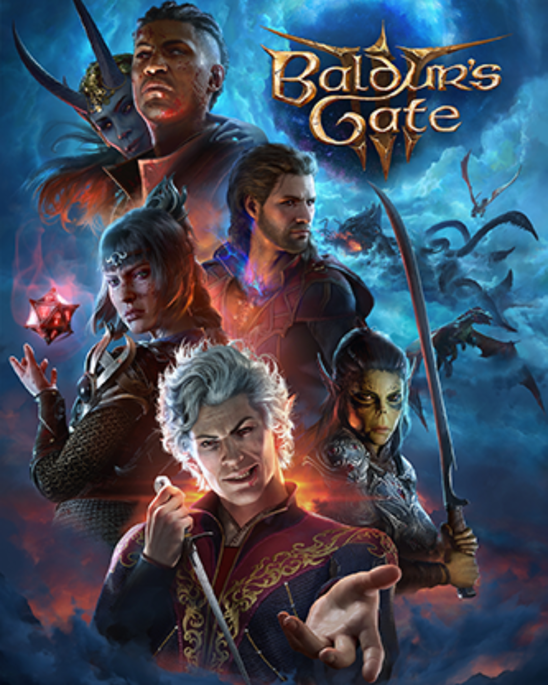
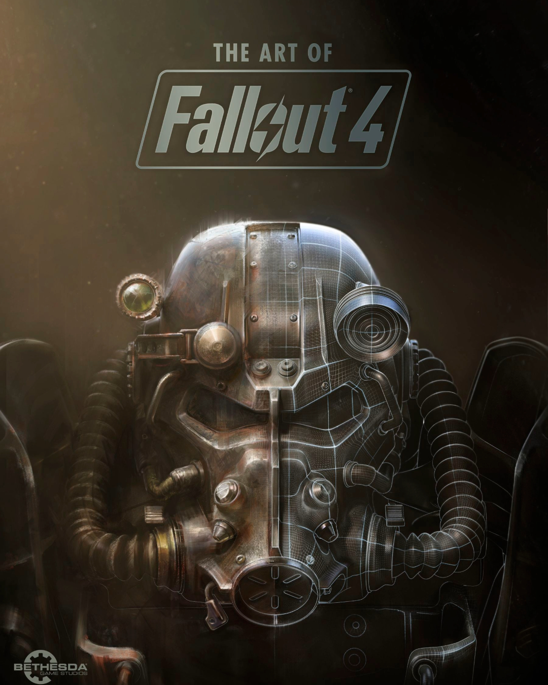
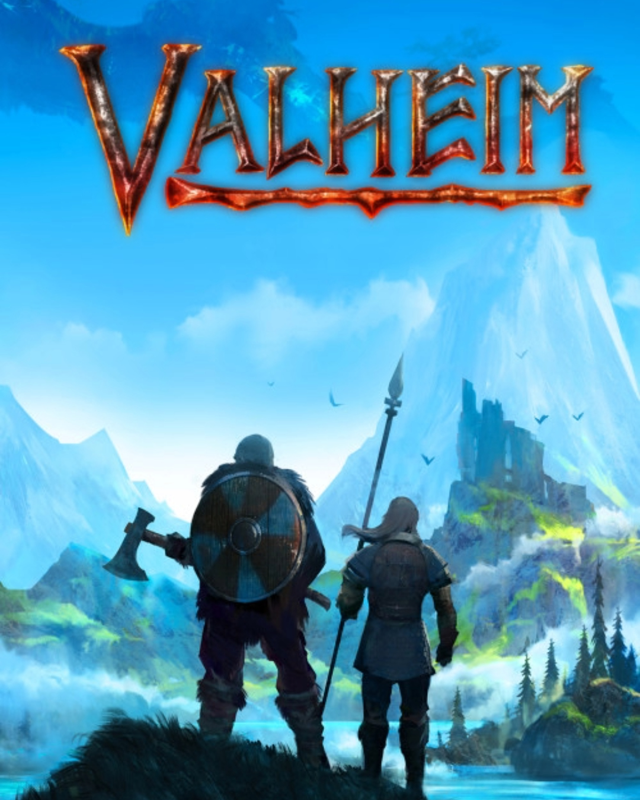
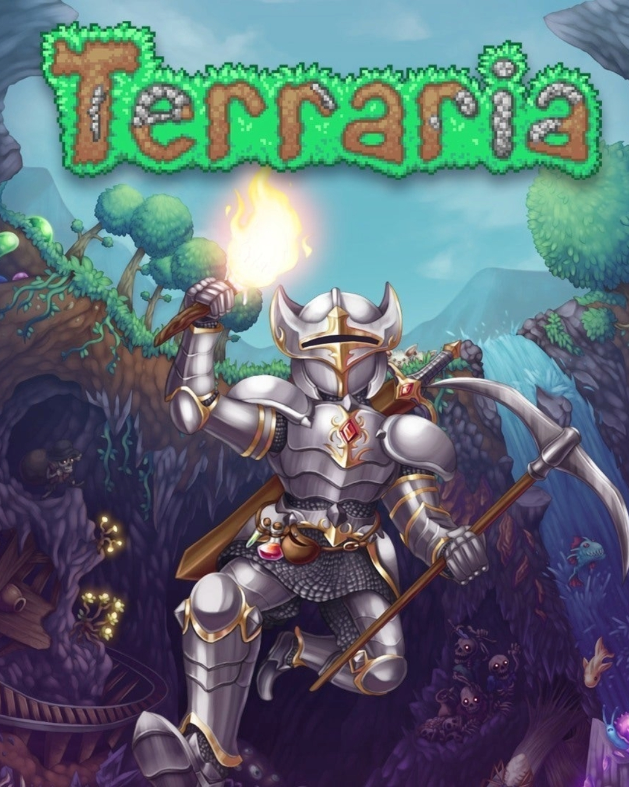

Jogos em destaque na Steam
Aqui você encontra os melhores jogos, por preços acessíveis.
Sites
-

Escolha entre 12 classes e 11 raças do Livro do Jogador de D&D e crie sua própria identidade, ou jogue como um herói de Origem com um histórico artesanal. Ou enfrente sua corrupção interior como o Dark Urge, um herói de Origem totalmente personalizável com suas próprias mecânicas e história únicas. Seja quem você escolher ser, aventure-se, saqueie, batalhe e romanceie pelo Caminho dos Esquecidos e além. Reúna sua equipe. Leve a aventura online como um grupo de até quatro pessoas.
-

Bethesda Game Studios, os premiados criadores de Fallout 3 e The Elder Scrolls V: Skyrim, dão as boas-vindas ao mundo de Fallout 4 - seu jogo mais ambicioso até agora e a próxima geração de jogos de mundo aberto. Como o único sobrevivente do Vault 111, você entra em um mundo destruído pela guerra nuclear. Cada segundo é uma luta pela sobrevivência, e cada escolha é sua. Apenas você pode reconstruir e determinar o destino da Wasteland. Bem-vindo(a) ao lar.
-

Um guerreiro morto pela batalha, as Valquírias levaram sua alma para Valheim, o décimo mundo Nórdico. Cercado por criaturas do caos e antigos inimigos dos deuses, você é o mais novo guardião do purgatório primordial, encarregado de matar os antigos rivais de Odin e trazer ordem para Valheim.
-

Escava, luta, explora, constrói! Nada é impossível neste jogo de aventura cheio de ação. O mundo é a tua tela e o próprio solo é a tua tinta. Agarra nas tuas ferramentas e vai! Cria armas para repelires uma variedade de inimigos em biomas numerosos. Escava no subsolo profundo para encontrares acessórios, dinheiro e outras coisas úteis. Junta recursos para criares tudo o que precisas para fazer do mundo o teu. Constrói uma casa, um forte ou até um castelo. Algumas pessoas irão mudar-se para lá e talvez até vender-te diferentes mercadorias para te assistirem na tua jornada.
Sobre o desenvolvedor
Sou Arthur Mury, tenho 25 anos de idade e formação em Engenharia da Computação, minha jornada no mundo da tecnologia tem sido uma emocionante aventura de aprendizado e descobertas. Desde os meus primeiros passos na universidade, percebi que minha paixão estava na interseção entre a criatividade e a lógica da computação. Durante meu curso, mergulhei fundo em áreas como programação, redes e sistemas, desenvolvendo habilidades que me prepararam para os desafios do mundo profissional. Durante minha formação, tive a oportunidade de trabalhar com desenvolvimento front-end, onde pude aplicar meu conhecimento para criar interfaces intuitivas e visualmente atrativas. Essa experiência me permitiu entender a importância da colaboração em equipe e da constante busca por aprimoramento técnico. No meu tempo livre, uma das minhas maiores paixões é jogar. Seja explorando mundos virtuais, competindo em jogos multiplayer ou desafiando minha mente com RPG, os jogos sempre foram uma fonte de entretenimento e inspiração para mim. Além disso, essa atividade também me ajuda a manter minha mente afiada e aprimorar minhas habilidades de tomada de decisão e resolução de problemas. Estou sempre em busca de novos desafios e oportunidades para expandir meus horizontes profissionais e pessoais.